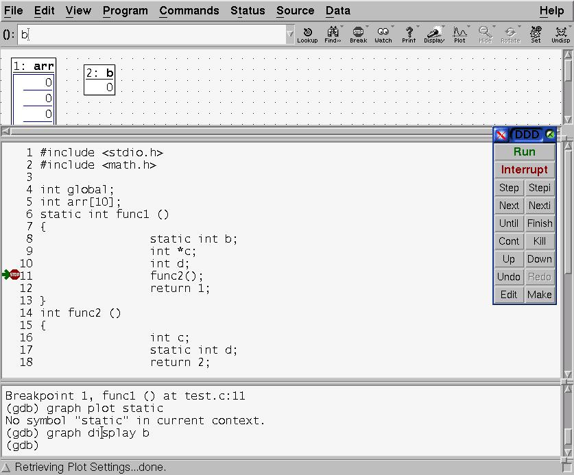
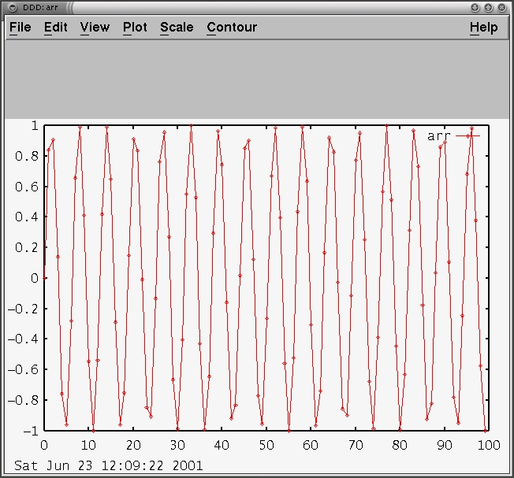

unix上debug的工具，當然就是gdb囉，如果用不習慣， 也有ddd這個圖形介面的可以用，ddd很簡單，像這樣
Figure 6-1. ddd示範

如果陣列裡面是個pointer陣列，繼續點它就繼續跑出值來， 如果想設中斷點，在想要的那一行點兩下就可以設了， 在View裡面有Data window，想看變數值請先打開它， 想看某個變數的值，也是一樣點一下變數就可以秀在Data window， 在每個地方亂按右老鼠鍵都有一些參數可以設，相當方便
ddd還可以對perl程式除錯， 用ddd --perl起動ddd來對perl程式除錯，或者在preference設perl模式，
還可以對陣列的變化畫圖，有時後我們在科學上的應用要對某個值畫圖， 可以用內建的plot功能，很方便，當然也可以輸出Postscript格式， 三維的圖是x y分別是陣列的indexz是陣列值 不過如果要對單一變數值變化畫圖 把值輸出成文字檔，叫gnuplot或者plotutil來畫更複雜的圖也可以
Figure 6-2. ddd的畫陣列功能

ddd用了MOTIF的函式庫呼叫， 由於正式motif也已經release成open source， 可以選擇裝正式的或以前的lesstif套件 說實在我不太建議先玩ddd，因為它實在太方便了， 玩了ddd就不會想玩gdb了，不過gdb其實還是比較強大， 他不僅可以在本機執行，還可以debug遠端的機器，Cisco內部IOS router的 除錯就是這樣除錯的。基本上gdb是跑不掉的， 所以ddd的一些名詞還是擺到gdb來說明